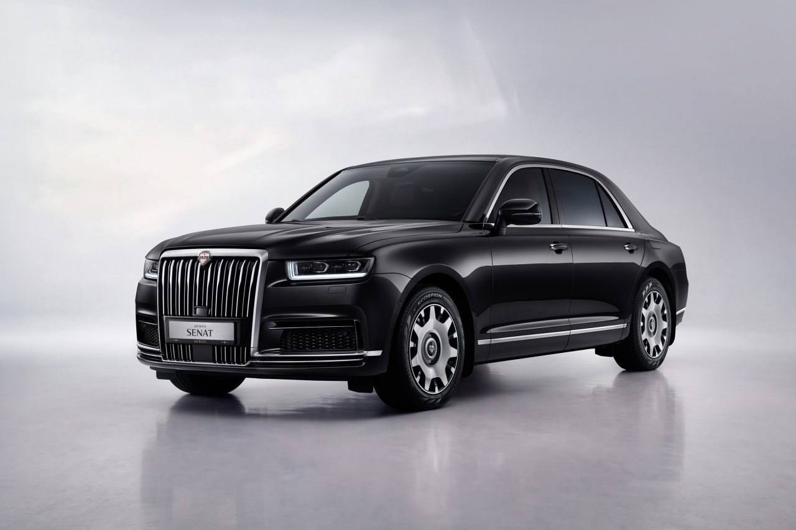
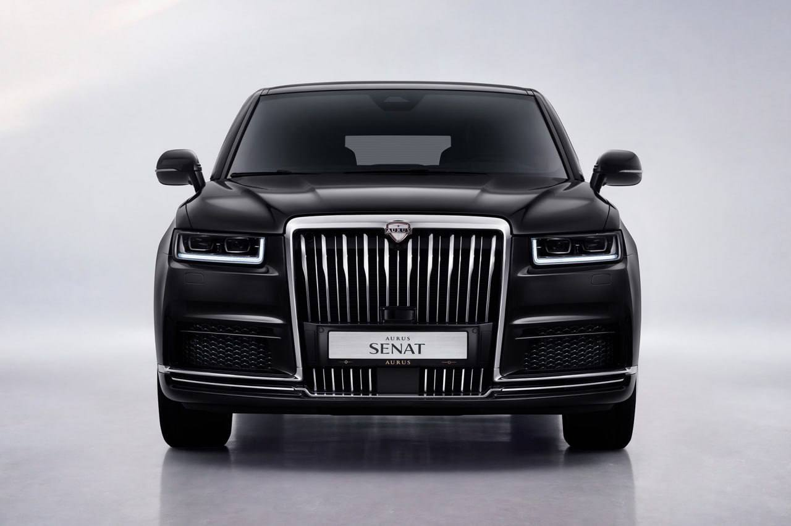
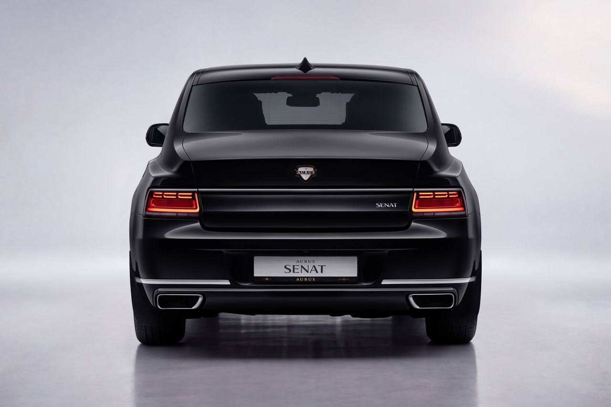
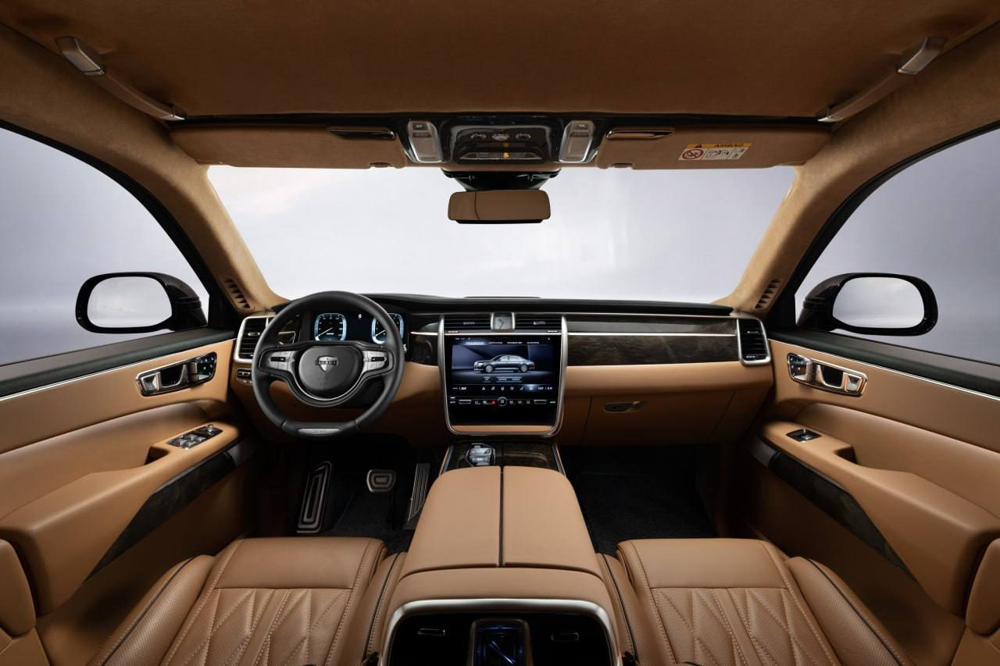
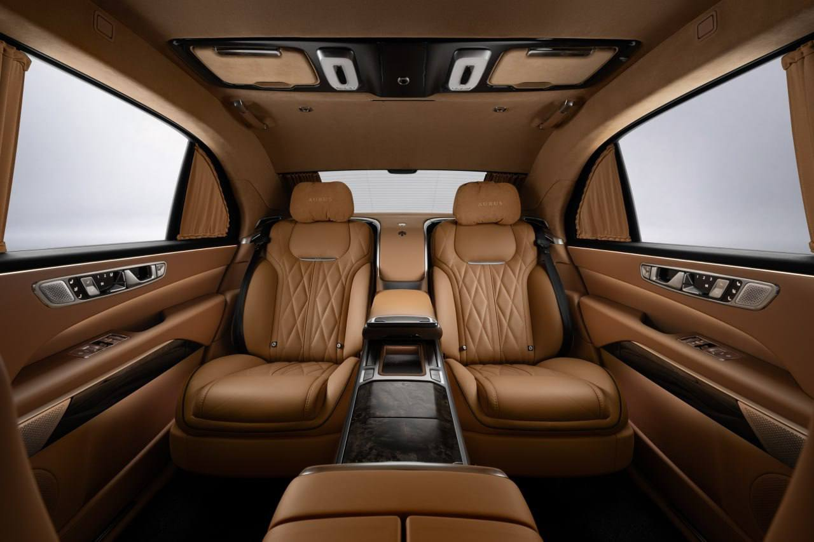
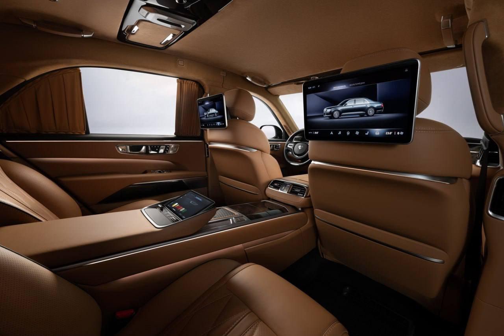

Тачки и Точка
@tachki
Тачки и Точка
@tachki
Aurus обновил Senat российский люкс получил НОЧНОЕ видение тепловизор в решётке выводит на приборную панель картинку дороги в темноте а камера следит за усталостью водителя.






Aurus обновил Senat — российский люкс получил НОЧНОЕ видение: тепловизор в решётке выводит на приборную панель картинку дороги в темноте, а камера следит за усталостью водителя.
Снаружи седан получил новые светодиодные фары и фонари и 22-дюймовые диски, а вместо рычага коробки в салоне теперь кнопки. Мотор прежний: гибридная установка с V8 на 598 сил и 9-ступенчатым автоматом.
Базовый Senat стоит от ₽48,5 миллиона, с опциями — до ₽58,5 миллиона, а удлинённая версия обойдётся минимум (!) в ₽107 миллионов. Первые машины сойдут с конвейера в начале 2027 года.
🚙 Тачки и Точка
Снаружи седан получил новые светодиодные фары и фонари и 22-дюймовые диски, а вместо рычага коробки в салоне теперь кнопки. Мотор прежний: гибридная установка с V8 на 598 сил и 9-ступенчатым автоматом.
Базовый Senat стоит от ₽48,5 миллиона, с опциями — до ₽58,5 миллиона, а удлинённая версия обойдётся минимум (!) в ₽107 миллионов. Первые машины сойдут с конвейера в начале 2027 года.
🚙 Тачки и Точка